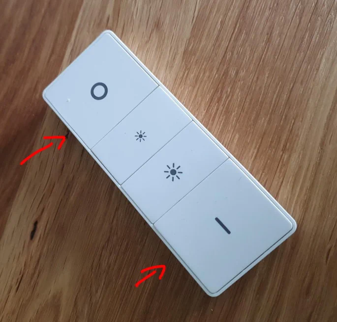

Resetting an unavailable Philips HUE bulb in Home Assistant
2022-04-10
After the most recent Home assistant update, some of my philips Hue lights became unresponsive. OK, no big deal, I have had this before, I will just reset them. Turns out this is not as easy as just flipping the switch a couple of times to put the bulb into pairing mode.
The manual is not very helpful either, and search the web sent me to install the HUE or Alexa apps (both were useless for this).
In the end I came accross a post somewhere about using the HUE remote. Luckily I have a couple around.
To reset a Philips HUE bulb, hold the on and off buttons on the remote for 10 seconds. The light will flash three times and the bulb will reset itself.


This was not the end of it.
I managed to get one bulb to pair, using the find devices in the ZHA menu. But another only seemed to not complete the pairing process (stuck at 'starting interview'). It did not fully initialize, but it did register a device in Home Assistant. This blocked me from doing anything else.
In the end, I found that I first had to completely remove the device. In Developer tools, I used the zha.remove service and put the IEEE address of the bulb (you can find this in the device menu).
You can do it in the GUI, but the yaml looks like this:
service: zha.remove
data:
ieee: 00:12:34:56:78:90:5a:b6After this, the bulb paired on the second attempt. 2 hours well spent!